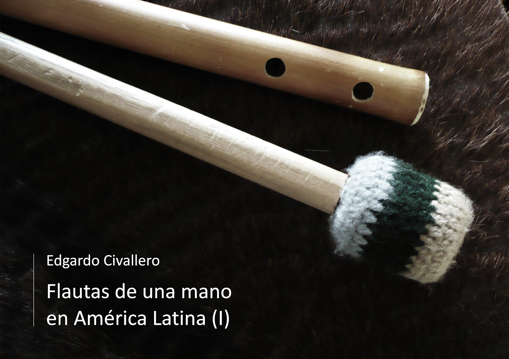

Flautas de una mano en América Latina. Parte I: Argentina, Chile y Bolivia
Inicio > Libros digitales sobre música > Flautas de una mano en América Latina. Parte I: Argentina, Chile y Bolivia
Cómo citar este trabajo: Civallero, Edgardo (2021). Flautas de una mano en América Latina. Parte I: Argentina, Chile y Bolivia. 2.ed.rev. Bogotá: Wayrachaki Editora.
Descargar en PDF.
Este libro constituye un estudio organológico, histórico y etnográfico de las llamadas flautas de una mano, instrumentos de viento que, en combinación con un membranófono, son ejecutados simultáneamente por un solo intérprete. A través de un análisis comparativo de fuentes escritas, iconografía, trabajo de campo y registros etnomusicológicos, se reconstruye el mapa de presencia y supervivencia de este sistema musical en el sur andino, destacando su continuidad desde contextos coloniales hasta expresiones vivas en comunidades rurales.
Estos instrumentos se definen como flautas de pico provistas de tres orificios de digitación, asociadas siempre a un tambor de tamaño variable. La peculiaridad reside en que un solo músico sostiene y toca ambos instrumentos: manipula la flauta con la mano izquierda mientras con la derecha golpea el tambor, que cuelga de los dedos, la muñeca o el antebrazo. El resultado es una textura sonora autosuficiente, pensada para acompañar danzas ceremoniales o festivas, muchas de ellas de raíz agraria o ritual. Aunque existen paralelos europeos —como el pipe and tabor británico o las gaitas ibéricas—,las versiones latinoamericanas presentan particularidades técnicas y simbólicas que revelan componentes autóctonos previos a la colonización, fusionados con aportes coloniales posteriores.
El estudio comienza en el norte de Chile, donde subsiste un ejemplo emblemático: la flauta y tambor del Baile del Torito en San Pedro de Atacama. Esta danza ritual, vinculada a las festividades de San Juan y San Pedro, combina una flauta tipo pinkillo —de madera o caña, con tres orificios frontales— con una caja colgada de la muñeca. La música, repetitiva y pausada, sostiene una coreografía ritual de ofrenda. La flauta empleada, reforzada con tiras de tendón o cinta, se asemeja a los pinkillos andinos, mientras que la caja reproduce el modelo ancestral de la tinya incaica, sin orificios de descompresión ni sobrearos. Este conjunto constituye una reliquia viviente de la fusión entre tradiciones atacameñas, coloniales y andinas.
En el noroeste argentino y sur de Bolivia se encuentra la kamacheña o camacheña, flauta de tres o cuatro orificios construida en caña de Castilla, con una embocadura singular provista de aletas laterales que se introducen en la boca para sostener el instrumento mientras se toca con una sola mano. Su ámbito geográfico abarca Jujuy, Salta y Tarija. La flauta se ejecuta junto a una caja colgada de la muñeca derecha, siguiendo la estética de las danzas de ronda o ruedas. Estas representaciones comunitarias acompañan coplas y tonadas entre agosto y marzo, coincidiendo con el awti pacha o tiempo seco. La kamacheña, de uso ritual y profano, es probablemente un vestigio prehispánico adaptado a estructuras rítmicas andinas coloniales. Puede vincularse además con hallazgos arqueológicos de flautas de embocadura tipo quena en Inca Cueva (Jujuy), fechadas en el 2130 a.C., lo que sugiere una larga continuidad técnica.
El análisis puede extenderse a las flautillas chaquenses, derivadas de la kamacheña y difundidas entre los pueblos del Chaco austral: Qom, Pi'laqá, Yofwaja, Nivaklé y Wichi. Estas versiones presentan una mayor diversidad constructiva (longitud, diámetro, ornamentación y número de orificios) y, aunque desprovistas de función ritual, conservan un papel identitario masculino. Se documentan las denominaciones nativas (por ejemplo, nashiré koktá, vat' anjantché sisé, kanohí) y se destaca su vitalidad en repertorios seculares contemporáneos, donde el instrumento actúa como marcador cultural de continuidad indígena.
El tercer bloque se centra en el altiplano boliviano y peruano, donde se desarrollan múltiples variantes aymaras. La más representativa es el waka-pinkillo o "flauta del toro", aerófono de tres orificios (dos frontales y uno posterior) hecho de caña sokhosa y complementado con una wank'ara, un tambor de doble parche, con sobrearos y chirlera. A diferencia de las versiones del sur, el waka-pinkillo se toca en conjuntos colectivos, de 10 a 30 músicos, siguiendo el modelo de las bandas altiplánicas. Cada grupo combina flautas grandes (60 cm) y pequeñas (40 cm), afinadas en quintas paralelas, generando la textura sonora densa y vibrante característica de la estética aymara. El instrumento acompaña las danzas waka waka, waka tinti, waka tinki y waka thuqhuri, ejecutadas en fiestas agrícolas y de ofrenda a la Pachamama, donde el toro simboliza la fertilidad y la fuerza del trabajo agrícola.
El libro registra además otras flautas de una mano altiplánicas: la liku, usada en la danza wit'iti de la provincia de Aroma; la paya p'iya ("dos orificios"), empleada en la danza de los pacochis de Omasuyos, parodia colonial de los militares españoles; los rollanos de la danza liberia (Potolo, Sacopampa, Quila Quila y Purunquila), hechos con ramas curvadas y atadas; y el pinkillo camata de La Paz, instrumento de dos orificios de más de 60 cm, acompañado de un gran bombo y ejecutado en el baile del jach'a tata danzante. En todos los casos se resalta la relación estrecha entre instrumento, danza y ciclo agrícola, así como la función de estas músicas como archivos vivos de la memoria andina.
El texto no solo cataloga instrumentos: reconstruye un entramado de gestos, rituales y materiales que, en su conjunción, mantienen el pulso ancestral del soplo y el tambor en los Andes. La obra evidencia cómo un formato sonoro aparentemente simple —una flauta y un tambor, un solo cuerpo que sopla y golpea— condensa una cosmología entera de reciprocidad entre el aliento humano y la tierra que resuena.